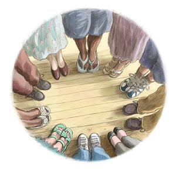

What is the purpose of a spiritual guru or teacher? I will assume that a genuine spiritual teacher is aware of who he or she really is – the Self, the One Consciousness within, Spirit, God, the Void, or whatever you want to call it. I will also assume that the teacher’s goal is to make sure that his or her students also become aware of who they really are. And finally, I will assume that the teacher wants his or her students to see who they really are as fast as possible.
Diagram 1 represents the relationship between teacher and students before the students have become aware of their True Self. It indicates that the teacher has something the students lack. The students look to the teacher to help them reach the goal of Enlightenment. Naturally their main focus is on the teacher since they are looking to learn primarily from him or her rather than from each other. This is a hierarchical structure. By its nature the relationship between teacher and students is not equal. The structure is uni-centred.
Diagram 2 represents the relationship between teacher and students after the students have seen who they really are.
The former teacher cannot be distinguished from the former students since all are now equally aware of their True Self. This is a relationship of equals. It is non-hierarchical and multi-centred. Each person is aware that he or she is the One and that everyone else is also the One. Now, if anyone is your teacher, everyone is your teacher, for you recognise that each is a unique expression of the One. And now, not only have the former students achieved their goal, so has the former teacher, for presumably his or her intention was to live in a society where everyone is aware of who they really are. In my view, the role of a teacher is limited to guiding people to the Self. Once the teacher has shown the student the Self, the teacher’s job is done and he or she can step down from that role – and enjoy the party! The relationship has evolved from teacher-student to friend-friend.
Which diagram, and therefore which community, appears to have more energy? It seems clear that a non-hierarchical, multi-centred community is more dynamic, and has better balance and stability. It provides more opportunities for creative interaction between its members and therefore for the personal growth of each member.
I am sometimes in the role of a spiritual teacher because I give Headless Way workshops. I guide people to their True Self using the Headless Way ‘experiments’. Before I introduce people to the experiments, in a sense I have something they don’t have. I am conscious of my True Self and they are not. But this set-up is temporary in the extreme for it takes perhaps a minute, or less, to show someone their True Self. This is the power of the experiments. They are effective and fast. For example, point at your own face. Do you see your face there? Of course not. What do you see instead? The world? That’s the experience of your True Self. Look at someone else. Are you face-to-face or face-to-no-face with them? Face-to-no-face, of course. That’s it. We trade faces. I am in you and you are in me! When you turn around, do you turn or does the world turn? Now you are seeing you are the still centre of the turning world! From the moment of first Seeing, everyone in a workshop is equal in the sense that everyone now has full access at will to their True Self. There is nothing more to see, nothing more to get. You are Home. Congratulations. You are ‘good to go’!
Of course, because this way of viewing yourself is profoundly different from the conventional, social view of yourself, people who have just become aware of their True Nature are likely to have questions and doubts. In a Headless Way workshop, the ex-teacher – who has now switched role to that of group facilitator – is probably in a good position to respond to these questions and doubts. This is because he or she has been living with the experience of Seeing and to some degree has thought things through. But the facilitator will be responding as someone who is no different at Centre from anyone else. Seeing who you really are is seeing you are essentially nothing. One person cannot experience Nothing more clearly or profoundly than another. Any guidance the former teacher might give is now given as a friend, an equal, not as someone who has something essential that others lack. And often enough someone new to Seeing will respond to another person’s question or doubt in a better way than the facilitator could. In fact, once Seeing has been shared, it’s clear that everyone is both a beginner and an expert. At Centre, since you are No-thing, you never accumulate any knowledge or status. Each time you see this faceless Emptiness, you see that you know nothing, have nothing, are nothing. Yet paradoxically this is the one thing you really do know, the one thing you really do have, the one thing you really are. Your True Self is the only ‘thing’ with which you are truly familiar and intimate, that you can be absolutely confident of and speak with authority on.
Sometimes people spend time in the presence of a teacher because of the teacher’s ‘darshan’. This is an Indian word indicating that the teacher’s awareness of the Self rubs off on others. The Seeing of the teacher is transmitted non-verbally to the student. In a sense, this is a one-way transaction. The teacher broadcasts the Self, the student receives. When I am seeing who I really am, I am broadcasting my faceless Openness to others. If I am with someone who is not aware of their faceless True Self, it’s not surprising if that person senses my Openness in some way. You cannot keep it to yourself. But what happens in a non-hierarchical community of seers where everyone is aware of being faceless, of being room for each other? Then you are reminded of your faceless True Self by everyone, from every direction. Now everyone is giving and receiving ‘darshan’. This is ‘darshan' gone viral! It is highly infectious.
Before you experience the Self, it is not uncommon to imagine that awareness of the Self is to do with a particular understanding of the Self, or feeling and behaving in a certain way. But when you experience the Self you realise it is a non-verbal, non-conceptual, non-emotional experience tied to no particular understanding, feeling or behaviour. In a community of seers, out of this experience – this shared experience of Silence, of No-mind, of fundamental Neutrality and Non-action – there grows an understanding that there isn’t one right way of thinking or feeling about the Self. Each person’s response is unique and valid. As a community of seers matures, gradually there emerges a non-dogmatic, tolerant, empathic, compassionate way of relating to one another. There might still be (there will be!) tensions and disagreements – this is not a recipe for utopia – but as long as you are Seeing, you are seeing there are no tensions or disagreements at Centre. This awareness that at Centre there is nothing to argue about, that you are empty for the other, that you are the other, makes a difference when disagreements arise at the human level.
I believe there’s a good chance that a global society of seers is emerging, that we are moving into a new kind of society where awareness of who we really are is the norm, not the exception. We have not been here before. There is a great deal to learn. We are living in exciting times. If it is true that as a species we are evolving from self-consciousness to Self-consciousness, whilst retaining a healthy awareness of our separate individual selves, then increasingly spiritual teachers will be seen down at the Job Centre simply because they will have done their job! May all spiritual teachers lose their jobs as fast as possible so they can join the party of Seeing friends! We play great music!
This article was written in July 2017 for the magazine Inzicht. It will be published in February 2018 in Inzicht (in Dutch).